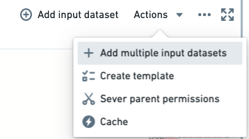

The following are some frequently asked questions about Code Workbook.
For general information, view our Code Workbook documentation.
Yes. You can copy-paste nodes (elements on the graph of a workbook) between workbooks.
Ctrl while selecting the nodes you would like to copy from one workbook. Copy-pasting Contour board nodes is not supported.Cmd+V (macOS) or Ctrl+V (Windows). The new nodes will be imported into your new workbook.No. Each transformation node on a code workbook graph must return a table or a dataframe (such as a two-dimensional data structure with columns).
The atomic unit of artifacts within Foundry is the dataset. Each transformation node needs to return a table or a dataframe (such as a two-dimensional data structure with columns) so that each node can be registered as a Foundry dataset and therefore available throughout the rest of Foundry. Moreover, the tables or dataframes in Code Workbook must be returned with a valid schema such that they will produce datasets (for example, at least one column exists, column names are not duplicated, column names do not contain invalid letters, and so on.).
Yes. For more information, view the documentation on branching and merging.
Code Workbookâs default configuration has an average initialization time of 3-5 minutes. However, if you have added additional packages to your Code Workbook profile, initialization times may range from 20-30 minutes, depending on the complexity and interdependencies of these packages. Initialization time tends to increase significantly as the number of packages in the environment increases.
Slow initialization generally indicates that the environment definition is too large or too complex. Initialization time tends to increase superlinearly with the number of packages in the environment, so you may want to simplify any custom environments. In some cases, Code Workbook may pre-initialize commonly-used environments to speed up initialization. If you have created a custom environment based on a default profile, the slower initialization time may be due to the lack of pre-initialization. Learn more about optimizing the initialization time of a custom environment
If the browser tab is inactive for more than 30 minutes, the environment may be lost due to inactivity.
If these transforms were built into a dataset, you can use the Compare feature of the resulting Dataset Preview to view the code at that time. From there you can copy-paste the relevant transforms. Unfortunately, if this code was in an intermediate transform, it cannot be recovered.
Code Workbook is a more iterative platform than Code Repositories, the latter of which has a full git commit and publish functionality. If you have any other branches available, we recommend checking them for the deleted transform.
By default, any Python package available in Conda Forge â is available to add to a custom environment for your workbook. If the Python library is included in Conda Forge, then you can customize your environment to include it directly.
To troubleshoot, perform the following steps:
Note that it might take a while for the environment to reload, working with custom environments in general will be slower than with the stock environment, since a pool of stock environments is kept "warmed" whereas each custom environment is spun up from scratch.
Sometimes it may be required to use a library that is not already available within Code Workbook. It is possible to have these added to your available list, but this requires some hands-on work.
To troubleshoot, perform the following steps:
I am trying to update my workbook environment, and it states "Waiting for Spark / Initializing environment" for a while and then errors out with a âFailed to create environmentâ message.
To troubleshoot, perform the following steps:
This section discusses failures that are generally specific to Code Workbook.
For additional information, you may also refer to our guidance on Builds and checks errors.
Running an import package or any basic command returns the following error: "com.github.rholder.retry.RetryException: Retrying failed to complete successfully after 3 attempts. at com.github.rholder.retry.Retryer.call(Retryer.java:174)". When using a workbook in Pandas, the Code Workbook application will still convert from a Spark dataframe to a Pandas dataframe before your transformation, which consumes significantly more memory on the driver and is likely making it OOM.
To troubleshoot, perform the following steps:
This issue could occur for a variety of reasons, but the most common circumstance is with returning a table or dataframe that contains a valid schema. If none of the below steps help identify the particular error you are seeing, refer to our guidance on Builds and checks errors.
To troubleshoot, perform the following steps:
When opting to Update table preview for input tables, only the view for the input datasets is updated and the underlying dataset in Foundry is not automatically refreshed.
To troubleshoot, perform the following steps:
run -> run all. This will run all the transformation nodes in your code workbook while respecting build dependencies.The most common issue when you find yourself unable to merge your branch back into main is that the master branch is protected. There may be issues around merge conflicts, but that is covered in another section.
To troubleshoot, perform the following steps:
master, and ensure that the users you want to restrict from merging branches only have compass:edit permissions on the Workbook.
* Internally, Code Workbook has four permission levels related to branches: view, edit, maintain, and manage. By default, compass:read expands to view, compass:edit expands to edit, and compass:manage expands to maintain and manage.
* Creating a branch and preparing a merge into a parent branch always requires only edit permissions. Merging into a protected branch requires maintain permissions. Changing branch protection settings requires manage permissions.
* More information is available in our Branching overview.master branch.
* In these instances, resolve these merge conflicts before merging your branch back into master.
* More information is available in our Merging branches documentation.master branch is not protected, and there are no merge conflicts, and you are still unable to merge your branch into master, contact Palantir Support.Assuming I have dataset inputs of (1000 rows * 30 columns) + (1 million rows * 30 columns), and a transformation with a lot of windowing / column derivation steps, how can I make the computation run faster?
To troubleshoot, perform the following steps:
For experimentation or fast iteration, it is often a good idea to refactor your code into several smaller steps instead of a single large step.
This way, you compute the upstream cells first, write the data back to Foundry, and use this pre-computed data in later steps. If you were to keep re-computing without changing the logic of these early steps, this creates excessive work.
Concretely:
workbook_1:
cell_A:
work_1 : input -> df_1
(takes 4 iterations to get right): 4 * df_1
work_2: df_1 -> df_2
(takes 4 iterations to get right): 4 * df_2 + 4 * df_1
= 4 df_2 + 4 df_1
work_3: df_2 -> df_3
(takes 4 iterations to get right): 4 * df_3 + 4 * df_2 + 4 * df_1
total work:
cell_A
= work_1 + work_2 + work_3
= 4 * df_1 + (4 * df_2 + 4 * df_1) + (4 * df_3 + 4 * df_2 + 4 * df_1)
= 12 * df_1 + 8 * df_2 + 4 * df_3
Instead, if you wrote work_1 and work_2 into their own cells, the work you perform would instead look like:
workbook_2:
cell_A:
work_1: input -> df_1
(takes 4 iterations to get right): 4 * df_1
cell_B:
work_2: df_1 -> df_2
(takes 4 iterations to get right): 4 * df_2
cell_C:
work:3: df_2 -> df_3
(takes 4 iterations to get right): 4 * df_3
total_work:
cell_A + cell_B + cell_C
= work_1 + work_2 + work_3
= 4 * df_1 + 4 * df_2 + 4 * df_3
If you assume df_1, df_2, and df_3 all cost the same amount to compute, workbook_1.total_work = 24 * df_1, whereas workbook_2.total_work = 12 * df_1, so you can expect closer to the order of a 2x speed improvement on iteration.
For any "small" datasets, you should cache them by selecting the workbook, then choosing Actions > Cache.

This will keep the rows in-memory for your workbook and not require fetching from the written-back dataset. "Small" is an arbitrary judgment given several factors that must be considered, but Code Workbook does a good job of trying to cache it and will warn you if it is too big.
You should stick to native PySpark methods as much as possible and never user Python methods directly on data (such as looping over individual rows, executing a UDF). PySpark methods call the underlying Spark methods that are written in Scala and run directly against the data instead of the Python runtime; if you simply use Python as the layer to interact with this system instead of being the system that interacts with the data, you will get all the performance benefits of Spark itself.
If you can derive your own accurate sample of a large input dataset, this can be used as the mock input for your transformations, until such time you perfect your logic and want to test it against the full set.
Consider downsampling and caching datasets above one million rows before ever writing a line of PySpark code; you may experience faster turnaround times without catching syntax bugs slowly due to large dataset sizes.
A good code workbook looks like the following: